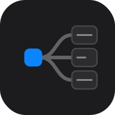

小工具
几个可以单独安装的网页工具。请打开对应页面，再用浏览器的「安装」或「添加到主屏幕」。装好后断网也能打开。Windows 脚本在下方「桌面」，下载解压即用。
网页
周期频率换算器
周期与频率互相换算
省钱比价
比较两个选项的单价，看哪个更划算
Markdown 编辑器
本地 Markdown 编辑与预览，支持贴图、收藏、历史

QuickMind 思维导图
用文本大纲快速生成思维导图
好用 App 清单
个人试过的好用 App 思维导图
大连水果月历
按月对照大连当季水果
桌面
Windows 工具
.bat / .vbs / .hta · 下载解压即用